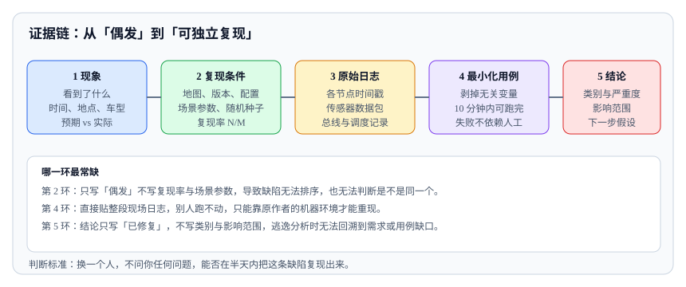

<script type="application/json" id="tb-manifest">
{
  "schema": "tb/1",
  "id": "L-003-001",
  "title": "缺陷分类、复现与证据链",
  "module": "M03",
  "concepts": [
    "defect-taxonomy"
  ],
  "target_level": "L3",
  "minutes": 50,
  "objectives": [
    "能按来源给机器人缺陷分类",
    "能建立可独立复现的证据链",
    "能区分严重度与优先级并完成分诊"
  ],
  "prerequisites": [
    "test-oracle-metrics"
  ],
  "exercises": [
    "EX-014-01",
    "EX-014-02"
  ],
  "resources": [
    "R-ISTQB",
    "R-29119-2"
  ],
  "objective_map": {
    "O1": [
      "EX-014-01"
    ],
    "O2": [
      "EX-014-02"
    ],
    "O3": [
      "EX-014-02"
    ]
  }
}
</script>
<article class="tb-lesson">
  <header>
    <p class="tb-eyebrow">M02 · 缺陷、覆盖与统计</p>
    <h1>缺陷分类、复现与证据链</h1>
    <p><strong>学完你能：</strong>把一条“偶发避障失败”写成可独立复现的证据链，并给出严重度、优先级和初步分类。</p>
  </header>
  <section class="tb-retrieval">
    <h2>开课前 3 分钟：先回忆</h2>
    <ol>
      <li>五类测试预言是什么？</li>
      <li>单次阈值和 N 次统计各适合什么？</li>
    </ol>
    <details>
      <summary>参考答案</summary>
      <p>规格、参考模型、蜕变、一致性、统计；单次阈值适合安全硬约束，N 次统计适合有随机性的成功率。</p>
    </details>
  </section>
  <aside>
    <p><strong>本课主读：</strong>R-ISTQB《ISTQB 官方术语表》。重点看 defect、failure、severity、priority 的定义，避免团队对同一个词有不同的理解。</p>
  </aside>
  <section>
    <h2>一、一条无法复现的缺陷单</h2>
    <p>一条真实的缺陷单可能只有一句话：“机器人偶尔不避障，重启后恢复。”没有版本、没有时间、没有日志、没有复现步骤。开发看了一眼说“无法复现”，单子被挂起；两周后客户现场再次发生，团队重新开始猜。问题不是开发不负责，而是缺陷记录没有形成证据链。</p>
    <p>缺陷管理的目标不是“记录问题”，而是让问题可分类、可复现、可定位、可验证。</p>
  </section>
  <section>
    <h2>二、先区分三个词</h2>
    <ul>
      <li><strong>错误（error）：</strong>人或系统产生的不正确状态，例如需求写错、代码算错。</li>
      <li><strong>缺陷（defect）：</strong>存在于软件、硬件或文档中的错误，是问题的根源。</li>
      <li><strong>失效（failure）：</strong>系统在运行时表现出的不正确行为，是用户看到的现象。</li>
    </ul>
    <p>三者的关系是：错误导致缺陷，缺陷在特定条件下触发失效。测试通常先看到失效，再回溯缺陷。分类和证据链的目的，就是缩短从“看到现象”到“定位缺陷”的距离。</p>
  </section>
  <section>
    <h2>三、机器人缺陷的十个类别</h2>
    <table>
      <thead>
        <tr><th>类别</th><th>典型表现</th><th>优先补充的测试</th></tr>
      </thead>
      <tbody>
        <tr><td>需求</td><td>实现符合文档，但不符合用户预期或场景</td><td>需求可测性评审、验收场景</td></tr>
        <tr><td>设计</td><td>缺少降级、互锁、安全状态设计</td><td>故障注入、状态迁移、设计评审</td></tr>
        <tr><td>实现</td><td>边界、异常路径、单位换算错误</td><td>单元测试、边界值、代码评审</td></tr>
        <tr><td>集成</td><td>接口协议、坐标系、时间戳不一致</td><td>契约测试、时序测试、联调</td></tr>
        <tr><td>环境</td><td>只在特定光照、地面、网络下出现</td><td>场景库、现场复现、环境矩阵</td></tr>
        <tr><td>传感器</td><td>漏检、误检、噪声、遮挡、量程不足</td><td>传感器标定、故障注入、数据回放</td></tr>
        <tr><td>标定</td><td>外参、内参、时间偏移导致系统性偏差</td><td>标定校验、一致性检查</td></tr>
        <tr><td>时序</td><td>延迟、抖动、超时、竞态、回调顺序</td><td>时序分析、并发注入、时间戳检查</td></tr>
        <tr><td>通信</td><td>丢包、断连、带宽不足、协议不兼容</td><td>通信注入、重连测试、版本兼容</td></tr>
        <tr><td>安全</td><td>急停、限速、防护、互锁失效</td><td>安全功能验证、认证测试、故障注入</td></tr>
      </tbody>
    </table>
    <p>分类不是给开发贴标签，而是决定下一步找谁、补哪类测试。一个“偶发避障失败”可能同时属于感知、时序和集成三类，分类时要写清楚初步判断和依据，而不是只选一个。</p>
  </section>
  <section>
    <h2>四、可复现需要哪些信息</h2>
    <p>“可复现”不是“我这边也能看到一次”，而是“另一个工程师按记录能稳定或高概率重现”。至少需要以下信息：</p>
    <ul>
      <li><strong>版本：</strong>软件、固件、配置、地图、模型文件的精确版本或哈希。</li>
      <li><strong>步骤：</strong>最小操作序列，包括前置状态、输入和等待时间。</li>
      <li><strong>环境：</strong>场地、光照、天气、地面、人流、网络条件。</li>
      <li><strong>数据：</strong>测试输入、rosbag、图像、点云、日志、参数文件。</li>
      <li><strong>频率：</strong>出现次数 / 总次数，是否与负载、时间、温度相关。</li>
      <li><strong>观测：</strong>预期结果、实际结果、关键指标的数值。</li>
    </ul>
    <p>偶发缺陷更应该记录上下文。随机性往往来自资源竞争、时间窗口或环境差异，没有上下文就无法缩小范围。</p>
  </section>
  <section>
    <h2>五、证据链的组成</h2>
    <table>
      <thead>
        <tr><th>证据</th><th>作用</th><th>注意事项</th></tr>
      </thead>
      <tbody>
        <tr><td>应用日志</td><td>还原状态变化和错误路径</td><td>统一时间源，保留原始时间戳</td></tr>
        <tr><td>rosbag / 数据回放</td><td>复现感知、规划、控制的输入输出</td><td>记录完整 topic，标注版本</td></tr>
        <tr><td>传感器原始数据</td><td>判断是感知算法还是输入数据的问题</td><td>保留未压缩或可解码格式</td></tr>
        <tr><td>视频 / 照片</td><td>还原现场物理环境</td><td>带时间戳，能对应日志</td></tr>
        <tr><td>配置与参数</td><td>排除环境差异</td><td>记录实际生效值，不是默认值</td></tr>
        <tr><td>构建与版本</td><td>确保复现的是同一版本</td><td>记录 commit、镜像、固件、地图</td></tr>
        <tr><td>测试运行记录</td><td>关联用例、环境和结果</td><td>保留运行 ID 和失败截图</td></tr>
      </tbody>
    </table>
    <p>证据链要能回答三个问题：发生了什么、在什么条件下发生、为什么可以排除其他原因。缺一项，定位成本就会成倍增加。</p>
    <figure>
      
      <figcaption>图 1：证据链的价值在于让“换一个人也能复现”；任何一环缺失，这条缺陷都无法被独立验证。</figcaption>
    </figure>
  </section>
  <section>
    <h2>六、实例：AGV 侧向避障失败</h2>
    <p>现象：AGV 在路口右转时，对从右侧进入的障碍物没有停车，继续行驶约 0.8 m 后才停。按模板记录：</p>
    <ul>
      <li><strong>版本：</strong>导航 3.4.2、感知模型 2026-10-18、地图 v12。</li>
      <li><strong>步骤：</strong>自动模式 → 右转路口 → 障碍物从右侧 1.2 m 处进入 → 观察停车距离。</li>
      <li><strong>环境：</strong>室内平地、光照 300 lux、无网络拥塞。</li>
      <li><strong>数据：</strong>rosbag 含 /scan、/camera、/obstacles、/cmd_vel、/tf。</li>
      <li><strong>频率：</strong>20 次中 3 次复现，均发生在转弯角速度 > 0.6 rad/s 时。</li>
      <li><strong>观测：</strong>感知在 120 ms 后才输出障碍物；规划收到后重算路径；控制延迟 80 ms。</li>
    </ul>
    <p>这条记录已经能支持初步判断：问题可能在感知延迟与转弯时视野遮挡的叠加，而不是单纯的“避障算法坏了”。</p>
  </section>
  <section>
    <h2>七、严重度与优先级</h2>
    <table>
      <thead>
        <tr><th>严重度</th><th>定义</th><th>例子</th></tr>
      </thead>
      <tbody>
        <tr><td>致命</td><td>可能造成人身伤害或重大安全事故</td><td>急停失效、碰撞未停车</td></tr>
        <tr><td>严重</td><td>核心功能不可用或数据丢失</td><td>导航完全失效、任务无法完成</td></tr>
        <tr><td>一般</td><td>功能受损但有规避方式</td><td>偶发重试、提示错误</td></tr>
        <tr><td>轻微</td><td>体验或文案问题</td><td>提示语不清、图标错位</td></tr>
      </tbody>
    </table>
    <p>优先级还要考虑：发生频率、影响客户数、是否有规避、修复成本、发布窗口。一个“轻微但阻塞发布”的问题优先级可能很高；一个“致命但极难触发且有监控”的问题，也可能通过限制发布范围先上线。</p>
  </section>
  <section>
    <h2>八、常见误区</h2>
    <ul>
      <li><strong>缺陷单只有一句话。</strong>没有版本、环境、数据和频率，无法复现。</li>
      <li><strong>把“无法复现”当关闭理由。</strong>应该记录尝试过的条件和下一步计划。</li>
      <li><strong>日志时间源不统一。</strong>感知、规划、控制各用各的时钟，无法对齐。</li>
      <li><strong>只保存应用日志，不保存原始数据。</strong>无法判断是算法问题还是输入问题。</li>
      <li><strong>严重度按谁的声音大定。</strong>应该有统一标准。</li>
      <li><strong>缺陷分类只选一个。</strong>复杂问题可能跨多个类别，应记录主类和次类。</li>
    </ul>
  </section>
  <section>
    <h2>九、检查清单</h2>
    <ul>
      <li>缺陷是否记录了版本、步骤、环境、数据、频率和观测？</li>
      <li>证据链是否包含日志、原始数据、配置和构建信息？</li>
      <li>时间戳是否统一，能跨模块对齐？</li>
      <li>是否给出了初步分类和依据？</li>
      <li>严重度和优先级是否按统一标准判定？</li>
      <li>“无法复现”的单子是否有后续计划和负责人？</li>
    </ul>
  </section>
  <section>
    <h2>十、缺陷分诊案例</h2>
    <p>同一周收到五条缺陷单，团队需要决定修复顺序。可以按严重度和优先级做一次分诊：</p>
    <table>
      <thead>
        <tr><th>缺陷</th><th>严重度</th><th>发生频率</th><th>影响客户</th><th>优先级</th><th>理由</th></tr>
      </thead>
      <tbody>
        <tr><td>急停后仍移动 10 cm</td><td>致命</td><td>低频</td><td>全部</td><td>P0</td><td>安全后果不可接受，立即修复</td></tr>
        <tr><td>充电对接失败不重试</td><td>严重</td><td>中频</td><td>部分桩型</td><td>P0</td><td>核心流程卡死，有现场工单</td></tr>
        <tr><td>导航在雨天偶发停车</td><td>严重</td><td>低频</td><td>户外客户</td><td>P1</td><td>有规避方式，需补场景并安排修复</td></tr>
        <tr><td>语音提示音量偏小</td><td>轻微</td><td>高频</td><td>全部</td><td>P2</td><td>体验问题，可随版本修复</td></tr>
        <tr><td>日志时间戳格式不一致</td><td>轻微</td><td>高频</td><td>内部</td><td>P1</td><td>影响排障效率，间接影响质量</td></tr>
      </tbody>
    </table>
    <p>分诊时最容易犯的错误是“按声音大小排序”。销售反馈的语音问题可能被排到 P0，而运维反馈的日志问题被忽略。正确的做法是看后果、频率、影响范围和是否有规避方式，而不是看谁催得紧。</p>
  </section>
  <section>
    <h2>十一、评审与面试追问</h2>
    <ul>
      <li><strong>问：严重度和优先级的区别？</strong>答：严重度看后果，优先级看修复顺序；低严重度但阻塞发布的问题优先级可能很高。</li>
      <li><strong>问：偶发缺陷怎么定优先级？</strong>答：看后果和可探测性；安全相关的偶发缺陷应按高优先级处理，不能因为难复现就降级。</li>
      <li><strong>问：缺陷分类只能选一个吗？</strong>答：可以记录主类和次类；复杂缺陷往往跨多个类别，分类是为了找对负责人和补测方向。</li>
      <li><strong>问：证据链最低要求是什么？</strong>答：版本、步骤、环境、数据、频率、预期与实际；缺一项，复现成本就会显著上升。</li>
      <li><strong>问：无法复现的缺陷怎么处理？</strong>答：记录尝试过的条件和下一步计划，保留监控和日志，设定复查时间，不能直接关闭了事。</li>
    </ul>
  </section>
  <div data-tb-exercise="EX-014-01"></div>
  <div data-tb-exercise="EX-014-02"></div>
  <section>
    <h2>十二、缺陷单质量抽检</h2>
    <p>可以每周抽检 10% 的缺陷单，检查五件事：版本是否精确、步骤是否可复现、证据是否齐全、分类是否有依据、严重度是否符合标准。抽检结果不用于考核个人，而用于改进模板和培训。如果同类信息反复缺失，说明模板或流程有问题，而不是提交者不认真。</p>
    <p>抽检还能发现“假关闭”：缺陷单关了，但没有验证记录，或者修复只覆盖了一个场景。对安全相关缺陷，关闭前必须有复测证据和横向排查结论。抽检结果每月汇总一次，看看哪些字段最常缺失，再改模板；模板改完要重新抽检，确认缺失率下降。</p>
    <p>比单条缺陷更重要的是趋势：同类缺陷是否在增加、平均关闭时间是否变长、现场缺陷占比是否下降。如果只盯单条缺陷，团队会陷入“修一个、冒一个”的循环；看趋势才能发现流程或架构层面的系统性问题。</p>
    <p>缺陷库还要和测试用例、风险登记、发布记录互相链接。这样在评审“这个风险有没有被验证”时，可以直接从风险跳到缺陷、再从缺陷跳到补测用例，而不是靠人回忆。缺陷趋势最好按版本和模块拆分，才能看出问题是集中在某个模块，还是全系统性的。</p>
  </section>
  <aside class="tb-callout" data-tone="warn">
    <p><strong>常见误区：</strong>“无法复现”可以关闭缺陷。正确做法是记录尝试过的条件、复现率和下一步计划。</p>
  </aside>
  <section>
    <h2>小结</h2>
    <p>缺陷管理的价值不在于把问题记下来，而在于让问题可分类、可复现、可定位、可验证。一个好的缺陷记录应该让另一个工程师在不问你任何问题的情况下开始复现；一个好的证据链应该能回答“发生了什么、在什么条件下、为什么排除其他原因”。做到这两点，缺陷处理时间会大幅下降。</p>
  </section>
</article>
